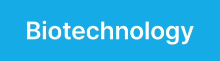

Overview
바이오 산업은 GxP·FDA·EMA 등 글로벌 규제를 충족하지 못하면 시장 진입 자체가 불가능합니다. 웅진은 ERP와 품질관리(QM)·문서관리·Audit Trail 기반 솔루션을 통해 데이터 무결성과 추적성을 확보하여 규제 대응과 글로벌 인증을 지원합니다.
바이오 산업의 규제 준수와 품질 관리를 위한 IT 시스템의 필요성
바이오 산업은 높은 품질 기준과 엄격한 규제 준수를 요구하는 분야입니다. 신약 개발부터 생산, 유통에 이르는 전 과정에서 데이터 정합성과 일관된 품질 관리가 중요하며, 이는 기업의 경쟁력을 결정짓는 핵심 요소입니다. 웅진은 바이오 산업의 특수한 요구 사항을 충족하기 위해 LIMS(Laboratory Information Management System), QMS(Quality Management System), MES(Manufacturing Execution System), PLM(Product Lifecycle Management) 등 다양한 IT 솔루션을 통합합니다. 이를 통해 기업은 데이터를 일관되게 관리하고, 실시간 모니터링으로 규제 준수를 보장하며, 시장 경쟁력을 강화할 수 있습니다. 웅진의 솔루션은 복잡한 글로벌 규제 요건을 충족하면서도 효율적인 데이터 관리와 통합 품질 관리를 통해 바이오 기업의 성장을 지원합니다.
생산 및 유통 과정에서의 통합 관리와 데이터 무결성 보장
웅진의 통합 IT 시스템은 생산부터 유통까지 모든 데이터를 중앙에서 관리하여 규제 준수와 품질 관리를 일관되게 유지할 수 있도록 지원합니다. 각종 시스템에서 수집된 데이터는 실시간으로 통합 관리되어, 외부 감사나 규제 기관의 요구에 신속히 대응할 수 있습니다. 또한, 이러한 시스템은 변화하는 시장 환경에 유연하게 대응할 수 있는 디지털 기반을 제공하여, 기업이 복잡한 바이오 산업 내에서 지속 가능한 성장을 실현하도록 지원합니다.

Features
규제 준수를 위한 통제력 제공으로 리스크 최소화
웅진은 국내 다양한 제약 및 바이오 기업과의 프로젝트를 통해 KGMP, EU GMP 등 다양한 규제를 준수하는 IT 시스템을 제공해왔습니다. 이러한 경험을 바탕으로, 웅진은 SAP를 중심으로 GMP를 준수하는 생산관리, 품질관리, 원가관리 모듈을 제공합니다. 이 시스템은 복잡한 규제 요구 사항을 효율적으로 관리할 수 있도록 설계되어, 실무 편의성을 높이면서도 규제 준수를 일관되게 유지합니다.
유연한 대응과 통합 품질 관리로 규제 준수 강화
웅진은 바이오 기업의 특수한 요구 사항에 맞춰 ERP, MES, LIMS, QMS 등 다양한 IT 솔루션을 통합하여 제공합니다. 이를 통해 기업은 생산성 향상, 품질 관리, 규제 준수라는 세 가지 핵심 과제를 동시에 해결할 수 있습니다. 또한, 클라우드 기반의 솔루션을 통해 변화하는 규제 요건에 신속히 대응하고, 글로벌 시장 진출을 위한 효율적인 시스템을 구축할 수 있습니다. 특히, QMS와 LIMS의 통합 운영은 품질 관리와 데이터 관리의 일관성을 유지하여 규제 준수를 용이하게 합니다. 이 시스템은 품질 관리 프로세스를 자동화하고, 제품 개발부터 생산, 유통까지 전 과정을 추적 가능하게 하여 투명성과 책임성을 높입니다. 이러한 일관된 품질 관리는 제품의 신뢰성을 높이고, 규제 리스크를 최소화하는 데 기여합니다.
데이터 무결성 보장과 규제 준수를 위한 통합 관리 시스템
바이오 산업의 핵심은 데이터의 정확성과 일관성입니다. 웅진의 통합 관리 시스템은 다양한 제조 및 실험실 데이터를 중앙에서 관리하며, 모든 과정에서 데이터를 일관되게 유지합니다. 이러한 통합 데이터 관리 체계는 외부 감사와 규제 준수 시 높은 신뢰성을 제공하며, 기업이 변화하는 시장 환경에서 지속적으로 성장할 수 있도록 지원합니다.